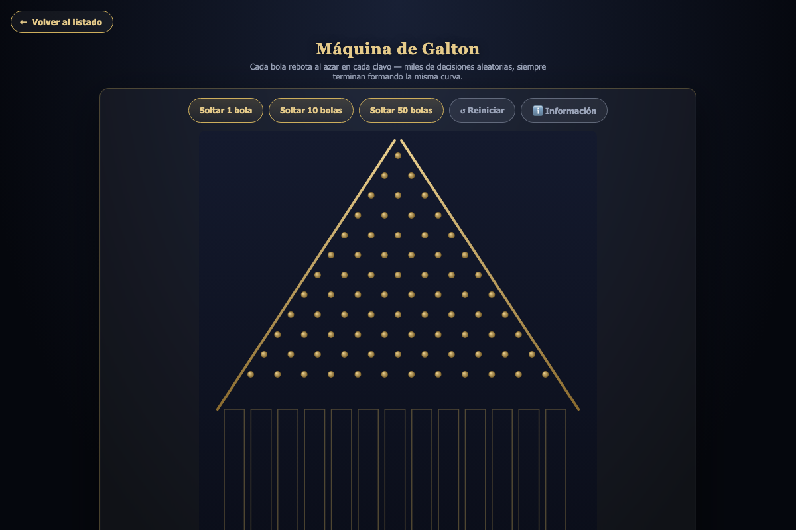
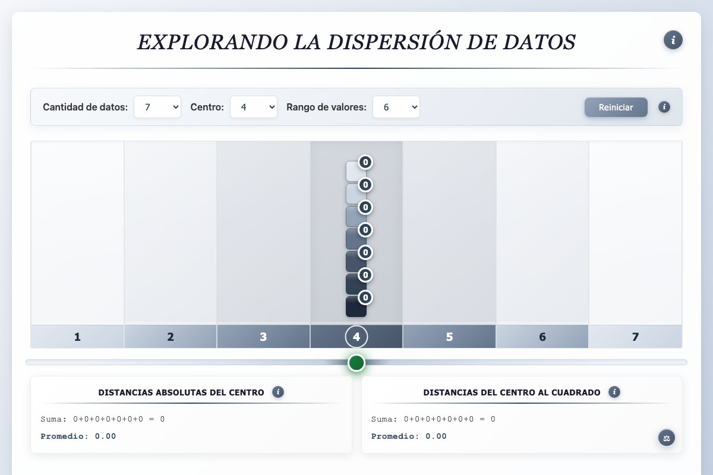
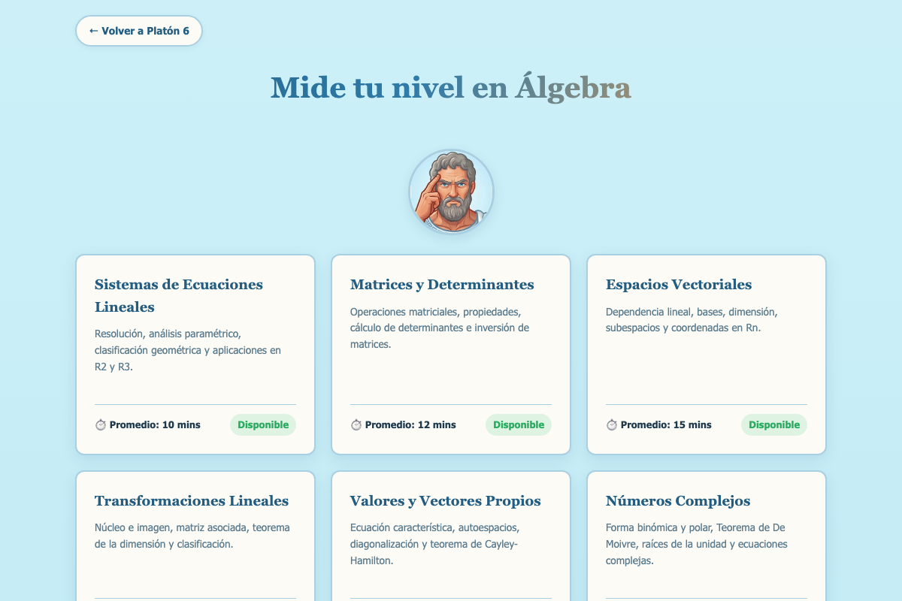
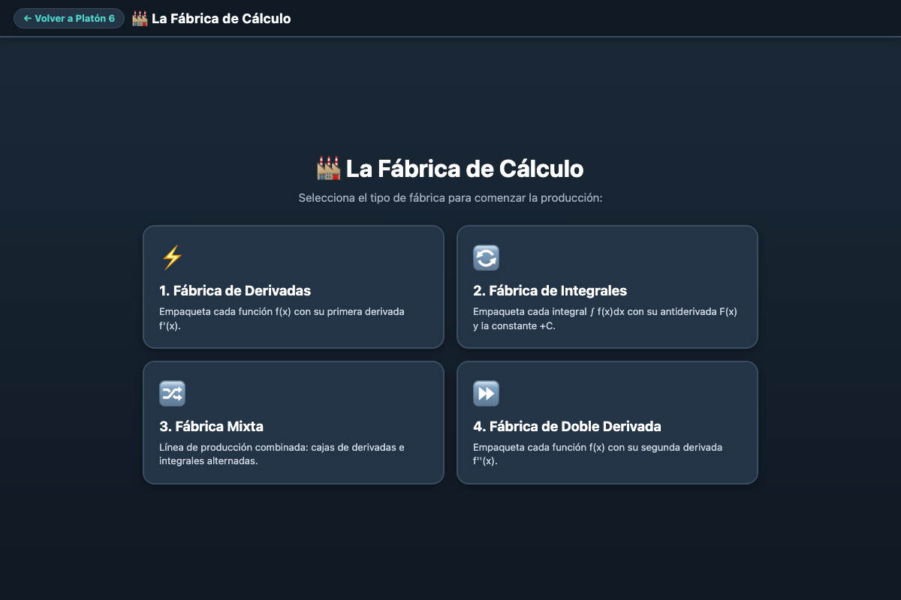
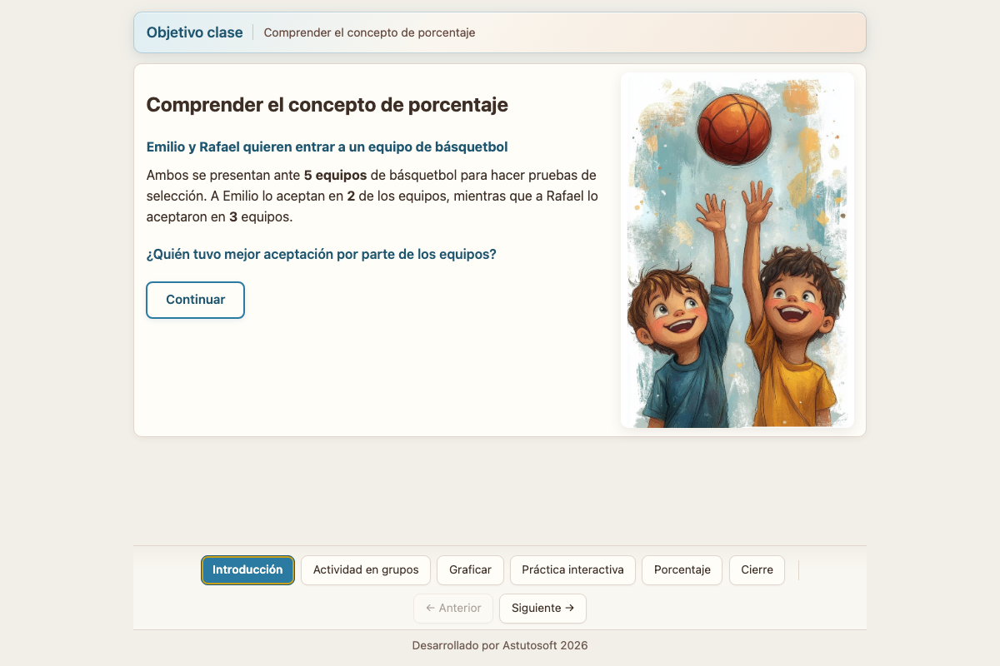
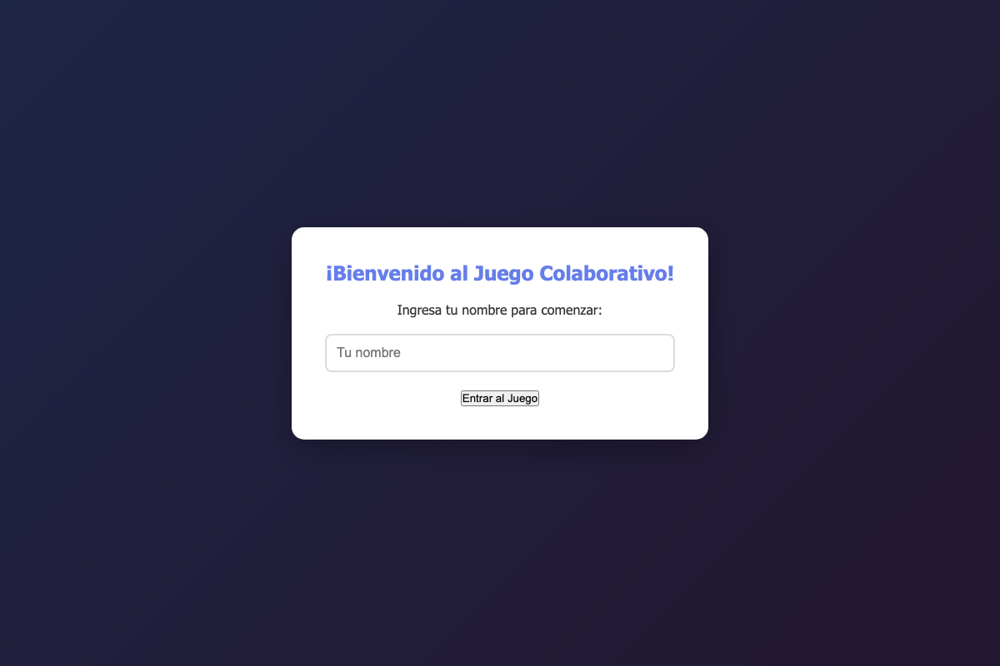

Tipos de recursos digitales interactivos
Aquí se muestran algunos ejemplos según su uso o características de los recursos que se pueden crear.

🔬 1. Simulaciones
Conceptos difíciles de imaginar solo con palabras (una distribución que se arma sola, una parábola que cambia al mover una palanca) se vuelven deslizadores interactivos que el alumno manipula y ve en tiempo real.
👉 Ver ejemplo: Máquina de Galton ↗
🔍 2. Exploración
A diferencia de la simulación, aquí no se manipulan variables para "ver qué pasa": el alumno navega y descubre un dato o concepto ya construido, a su propio ritmo.
👉 Ver ejemplo: Dispersión de datos ↗
✅ 3. Pruebas y ejercitación guiada
Quizzes, autoevaluaciones adaptativas y generadores de ejercicios infinitos con corrección instantánea — ideal para repasar antes de una evaluación o practicar sin que el profe invente 30 problemas a mano.
👉 Ver ejemplo: Evaluación Adaptativa de Álgebra ↗
🏆 4. Juegos y gamificación de aula
Puntaje, rondas, tiempo límite y "game over" — el alumno practica un contenido serio (como derivar funciones) empujado por la mecánica de un videojuego arcade, no por una hoja de ejercicios.
👉 Ver ejemplo: La Fábrica de Cálculo ↗
🎤 5. Presentaciones interactivas
Como un PPT, pero mucho más potente: transiciones controladas por el profe, elementos clicables y contenido que reacciona en vivo frente al curso.
👉 Ver ejemplo: Introducción — Porcentaje ↗
🔴 6. Colaboración en tiempo real
Varios alumnos participan a la vez desde sus propios dispositivos y ven los cambios de los demás al instante — sin recargar la página.
👉 Ver ejemplo: Tabla de Multiplicar colaborativa ↗✍️ 7. Creación y producción del estudiante
El alumno no consume el recurso: lo usa para producir algo propio (una historia, una mini-presentación, un proyecto). Sin ejemplo en el sitio todavía.
📊 8. Monitoreo de actividades
Recursos que registran información (respuestas, tiempos, progreso) para que el equipo docente la revise después. Sin ejemplo en el sitio todavía.
Lo mejor de todo: No necesitas elegir solo uno. A lo largo del taller aprenderás a combinar estos elementos para construir experiencias de aprendizaje que dejen a tus alumnos diciendo: «¡Qué entretenida estuvo la clase hoy, profe!»